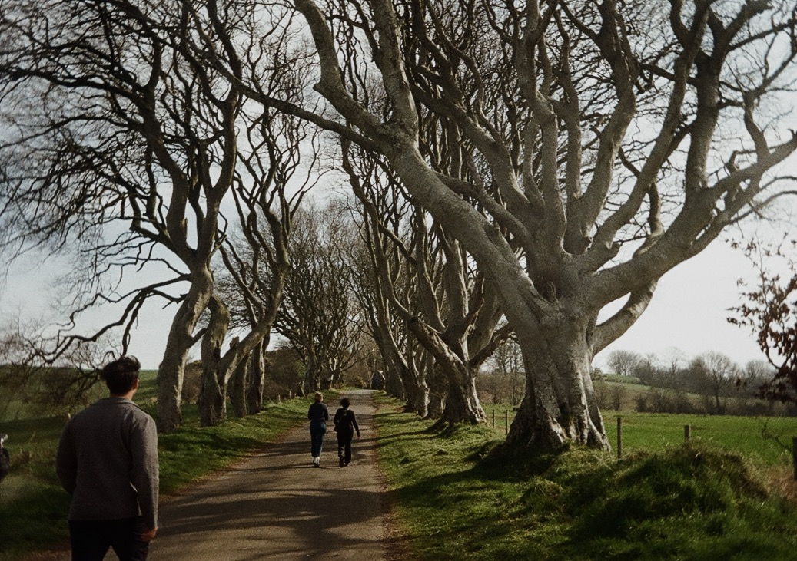

🎞️ Film Roll Archive
Memories are film stills — some in motion, some paused. Here's how I’ve captured beauty across four homes I've lived and loved.
🇮🇩 Indonesia


🇮🇪 Ireland

🇺🇸 Washington, DC
🇯🇵 Japan